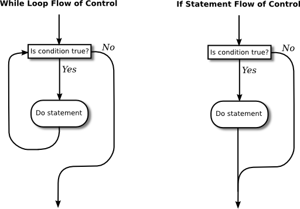

Blocks, Loops and Branches
The ability of a computer to perform complex tasks is built on just a few ways of combining simple commands into control structures. In Java, there are just six such structures that are used to determine the normal flow of control in a program—and, in fact, just three of them would be enough to write programs to perform any task. The six control structures are: the block, the while loop, the do..while loop, the for loop, the if statement, and the switch statement. Each of these structures is considered to be a single "statement," but it is a structured statement that can contain one or more other statements inside itself.
Blocks
The block is the simplest type of structured statement. Its purpose is simply to group a sequence of statements into a single statement. The format of a block is:
{
statements
}That is, it consists of a sequence of statements enclosed between a pair of braces, "{" and "}". In fact, it is possible for a block to contain no statements at all; such a block is called an empty block, and can actually be useful at times. An empty block consists of nothing but an empty pair of braces. Block statements usually occur inside other statements, where their purpose is to group together several statements into a unit. However, a block can be legally used wherever a statement can occur. There is one place where a block is required: As you might have already noticed in the case of the main subroutine of a program, the definition of a subroutine is a block, since it is a sequence of statements enclosed inside a pair of braces.
I should probably note again at this point that Java is what is called a free-format language. There are no syntax rules about how the language has to be arranged on a page. So, for example, you could write an entire block on one line if you want. But as a matter of good programming style, you should lay out your program on the page in a way that will make its structure as clear as possible. In general, this means putting one statement per line and using indentation to indicate statements that are contained inside control structures. This is the format that I will use in my examples.
Here are two examples of blocks:
{
System.out.print("The answer is ");
System.out.println(ans);
}
{ // This block exchanges the values of x and y
int temp; // A temporary variable for use in this block.
temp = x; // Save a copy of the value of x in temp.
x = y; // Copy the value of y into x.
y = temp; // Copy the value of temp into y.
}In the second example, a variable, temp, is declared inside the block. This is perfectly legal, and it is good style to declare a variable inside a block if that variable is used nowhere else but inside the block. A variable declared inside a block is completely inaccessible and invisible from outside that block. When the computer executes the variable declaration statement, it allocates memory to hold the value of the variable (at least conceptually). When the block ends, that memory is discarded (that is, made available for reuse). The variable is said to be local to the block. There is a general concept called the "scope" of an identifier. The scope of an identifier is the part of the program in which that identifier is valid. The scope of a variable defined inside a block is limited to that block, and more specifically to the part of the block that comes after the declaration of the variable.
The Basic While Loop
The block statement by itself really doesn't affect the flow of control in a program. The five remaining control structures do. They can be divided into two classes: loop statements and branching statements. You really just need one control structure from each category in order to have a completely general-purpose programming language. More than that is just convenience. In this section, I'll introduce the while loop and the if statement. I'll give the full details of these statements and of the other three control structures in later sections.
A while loop is used to repeat a given statement over and over. Of course, it's not likely that you would want to keep repeating it forever. That would be an infinite loop, which is generally a bad thing. (There is an old story about computer pioneer Grace Murray Hopper, who read instructions on a bottle of shampoo telling her to "lather, rinse, repeat." As the story goes, she claims that she tried to follow the directions, but she ran out of shampoo. (In case you don't get it, she was making a joke about the way that computers mindlessly follow instructions.)) By the way, if you are working on the command line and need to stop a program that has gotten into an infinite loop, you should be able to do so with Control-C, that is, hold down the Control key and press the C key.
To be more specific, a while loop will repeat a statement over and over, but only so long as a specified condition remains true. A while loop has the form:
while (boolean-expression)
statement
Since the statement can be, and usually is, a block, most while loops have the form:
while (boolean-expression) {
statements
}Some programmers think that the braces should always be included as a matter of style, even when there is only one statement between them, but I don't always follow that advice myself.
The semantics of the while statement go like this: When the computer comes to a while statement, it evaluates the boolean-expression, which yields either true or false as its value. If the value is false, the computer skips over the rest of the while loop and proceeds to the next command in the program. If the value of the expression is true, the computer executes the statement or block of statements inside the loop. Then it returns to the beginning of the while loop and repeats the process. That is, it re-evaluates the boolean-expression, ends the loop if the value is false, and continues it if the value is true. This will continue over and over until the value of the expression is false when the computer evaluates it; if that never happens, then there will be an infinite loop.
Here is an example of a while loop that simply prints out the numbers 1, 2, 3, 4, 5:
int number; // The number to be printed.
number = 1; // Start with 1.
while ( number < 6 ) { // Keep going as long as number is < 6.
System.out.println(number);
number = number + 1; // Go on to the next number.
}
System.out.println("Done!");The variable number is initialized with the value 1. So when the computer evaluates the expression "number < 6" for the first time, it is asking whether 1 is less than 6, which is true. The computer therefore proceeds to execute the two statements inside the loop. The first statement prints out "1". The second statement adds 1 to number and stores the result back into the variable number; the value of number has been changed to 2. The computer has reached the end of the loop, so it returns to the beginning and asks again whether number is less than 6. Once again this is true, so the computer executes the loop again, this time printing out 2 as the value of number and then changing the value of number to 3. It continues in this way until eventually number becomes equal to 6. At that point, the expression "number < 6" evaluates to false. So, the computer jumps past the end of the loop to the next statement and prints out the message "Done!". Note that when the loop ends, the value of number is 6, but the last value that was printed was 5.
By the way, you should remember that you'll never see a while loop standing by itself in a real program. It will always be inside a subroutine which is itself defined inside some class. As an example of a while loop used inside a complete program, here is a little program that computes the interest on an investment over several years. This is an improvement over examples from the previous chapter that just reported the results for one year:
import textio.TextIO;
/**
* This class implements a simple program that will compute the amount of
* interest that is earned on an investment over a period of 5 years. The
* initial amount of the investment and the interest rate are input by the
* user. The value of the investment at the end of each year is output.
*/
public class Interest3 {
public static void main(String[] args) {
double principal; // The value of the investment.
double rate; // The annual interest rate.
/* Get the initial investment and interest rate from the user. */
System.out.print("Enter the initial investment: ");
principal = TextIO.getlnDouble();
System.out.println();
System.out.println("Enter the annual interest rate.");
System.out.print("Enter a decimal, not a percentage: ");
rate = TextIO.getlnDouble();
System.out.println();
/* Simulate the investment for 5 years. */
int years; // Counts the number of years that have passed.
years = 0;
while (years < 5) {
double interest; // Interest for this year.
interest = principal * rate;
principal = principal + interest; // Add it to principal.
years = years + 1; // Count the current year.
System.out.print("The value of the investment after ");
System.out.print(years);
System.out.print(" years is $");
System.out.printf("%1.2f", principal);
System.out.println();
} // end of while loop
} // end of main()
} // end of class Interest3
You should study this program, and make sure that you understand what the computer does step-by-step as it executes the while loop.
The Basic If Statement
An if statement tells the computer to take one of two alternative courses of action, depending on whether the value of a given boolean-valued expression is true or false. It is an example of a "branching" or "decision" statement. An if statement has the form:
if ( boolean-expression )
statement1
else
statement2
When the computer executes an if statement, it evaluates the boolean expression. If the value is true, the computer executes the first statement and skips the statement that follows the "else". If the value of the expression is false, then the computer skips the first statement and executes the second one. Note that in any case, one and only one of the two statements inside the if statement is executed. The two statements represent alternative courses of action; the computer decides between these courses of action based on the value of the boolean expression.
In many cases, you want the computer to choose between doing something and not doing it. You can do this with an if statement that omits the else part:
if ( boolean-expression )
statement
To execute this statement, the computer evaluates the expression. If the value is true, the computer executes the statement that is contained inside the if statement; if the value is false, the computer skips over that statement. In either case, the computer then continues with whatever follows the if statement in the program.
Sometimes, novice programmers confuse while statements with simple if statements (with no else part), although their meanings are quite different. The statement in an if is executed at most once, while the statement in a while can be executed any number of times. It can be helpful to look at diagrams of the flow of control for while and simple if statements:

In these diagrams, the arrows represent the flow of time as the statement is executed. Control enters the diagram at the top and leaves at the bottom. Similarly, a flow control diagram for an if..else statement makes it clear that exactly one of the two nested statements is executed:
Of course, either or both of the statements in an if statement can be a block, and again many programmers prefer to add the braces even when they contain just a single statement. So an if statement often looks like:
if ( boolean-expression ) {
statements
}
else {
statements
}or:
if ( boolean-expression ) {
statements
}As an example, here is an if statement that exchanges the value of two variables, x and y, but only if x is greater than y to begin with. After this if statement has been executed, we can be sure that the value of x is definitely less than or equal to the value of y:
if ( x > y ) {
int temp; // A temporary variable for use in this block.
temp = x; // Save a copy of the value of x in temp.
x = y; // Copy the value of y into x.
y = temp; // Copy the value of temp into y.
}Finally, here is an example of an if statement that includes an else part. See if you can figure out what it does, and why it would be used:
if ( years > 1 ) { // handle case for 2 or more years
System.out.print("The value of the investment after ");
System.out.print(years);
System.out.print(" years is $");
}
else { // handle case for 1 year
System.out.print("The value of the investment after 1 year is $");
} // end of if statement
System.out.printf("%1.2f", principal); // this is done in any caseI'll have more to say about control structures later in this chapter. But you already know the essentials. If you never learned anything more about control structures, you would already know enough to perform any possible computing task. Simple looping and branching are all you really need!
Control Abstractiont
Control structures such as if statements and while loops allow you to control processes that go on inside the CPU of a computer. But as to what actually goes on in the CPU, there is no such thing as an if statements or a while loops. As discussed in Section 1.1, a CPU can only execute simple machine language instructions. Loops and branches must be implemented in machine language using jump instructions, which change the value stored in the program counter register, and conditional jump instructions, which might or might not change the program counter, depending on the result of a simple test.
Implementing Java control structures in machine language can get rather complicated. Fortunately, you don't need to know how to do it. You can use Java control structures without knowing how they are implemented in machine language. In fact, you don't need to know anything about machine language or how CPUs work. This is an example of abstraction.
Abstraction is a central concept in computer science. Abstraction allows you to work with something without understanding how it works in detail. It allows you to work on a "higher level." If statements and while loops are examples of control abstractions. They allow you to work with a high-level programming language like Java, rather than with very low-level machine language.
You will encounter other kinds of abstraction later in this book. In fact, you've already encountered one: A variable is a basic example of data abstraction. A variable lets you use a name to work with a data value of a certain type. The computer has to keep track of the numerical address of that data in memory, how many bytes of memory the data occupies, and how to interpret the bits that are stored in that memory to represent the value. The variable is an abstraction that lets you avoid all that detail.
Definite Assignment
I will finish this introduction to control structures with a somewhat technical issue that you might not fully understand the first time you encounter it. Consider the following two code segments, which seem to be entirely equivalent:
int y; int y;
if (x < 0) { if (x < 0) {
y = 1; y = 1;
} }
else { if (x >= 0) {
y = 2; y = 2;
} }
System.out.println(y); System.out.println(y);In the version on the left, y is assigned the value 1 if x < 0 and it is assigned the value 2 otherwise, that is, if x >= 0. Exactly the same is true of the version on the right. However, there is a subtle difference. In fact, the Java compiler will report an error for the System.out.println statement in the code on the right, while the code on the left is perfectly fine!
The problem is that in the code on the right, the computer can't tell that the variable y has definitely been assigned a value. When an if statement has no else part, the statement inside the if might or might not be executed, depending on the value of the condition. The compiler can't tell whether it will be executed or not, since the condition will only be evaluated when the program is running. For the code on the right above, as far as the compiler is concerned, it is possible that neither statement, y = 1 or y = 2, will be evaluated, so it is possible that the output statement is trying to print an undefined value. The compiler considers this to be an error. The value of a variable can only be used if the compiler can verify that the variable will have been assigned a value at that point when the program is running. This is called definite assignment. (It doesn't matter that you can tell that y will always be assigned a value in this example. The question is whether the compiler can tell.)
Note that in the code on the left above, y is definitely assigned a value, since in an if..else statement, one of the two alternatives will be executed no matter what the value of the condition in the if. It is important that you understand that there is a difference between an if..else statement and a pair of plain if statements. Here is another pair of code segments that might seem to do the same thing, but don't. What's the value of x after each code segment is executed?
int x; int x;
x = -1; x = -1;
if (x < 0) if (x < 0)
x = 1; x = 1;
else if (x >= 0)
x = 2; x = 2;
After the code on the left is executed, x is 1; after the code on the right, x is 2. If you don't believe this, work though the code step-by-step, doing exactly what the computer does when it executes each step. The key point is that for the code on the right, both assignment statements, x = 1 and x = 2, are executed. Make sure that you understand why.